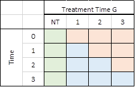
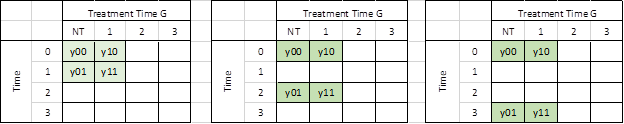
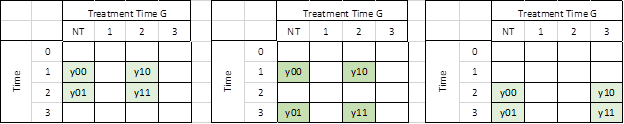
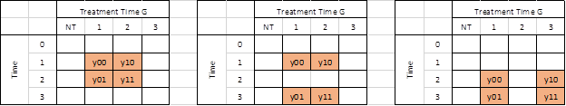

# Understanding what went wrong with DID (or DnD/DD/Diff
in Diff)?
So, as you may have read on my posts on Twitter, I've been working
closely with developing a Stata command for the DID estimator proposed by
Callaway and Sant'Anna (2021).
One of the payoffs of doing this, while trying to read or attend
presentations on DID estimators, is that after so much coding and reading, you
do end up understanding a few of the concepts better, in particular why some
strategies (like the infamous Two-way-Fixed-effect TWFE) may not produce
correct estimates.
I'll try to keep things simple, to improve the intuition. Let's
get started.
## DiD 2x2 Canonical Design
So let's start with the building block that most
of the papers I have read in regards on DID models use. This is the 2x2 canonical
design.
In the basic 2x2 DiD design you observe
two groups of observations across two periods in time.
In the first period, neither of these groups receive a treatment. So for all intents or purposes, you can assume that they are
identical in every single say.
In the second period, however, one of the groups receive a
treatment (a training program, medicine, or other type of treatment), whereas
the other is left "untreated".
Once the experiment is finalized, you can design a simple 2x2
matrix that could help analyze the data, and quantify the impact of the
treatment:
|
|
|
Treatment |
|
|
|
|
TR=0 |
TR=1 |
|
Time |
T=0 |
y00 |
y10 |
|
T=1 |
y01 |
y11 |
|
To simplify notation, Ill
assume that all the -yXY- represent the average
outcome for the group -X- (treated =1 or untreated=0) at time Y (Pre=0 and post
=1).
how do we estimate the treatment
effects? or how we cannot do it?
We know that the treatment
occurred in T=1. One may be willing to estimate the TE by simply obtaining the
difference in the outcome between treated and not-treated groups y11-y01 (First D). This,
however, would be incorrect, as this difference accounts for the treatment
effect and a self-selection bias. In other words, there could be differences
in their average outcomes because both groups were different to begin with.
The alternative could be
to just look at the treated unit, and evaluate how much its outcome has
increased after the treatment y11-y10.
This will also be incorrect, because the observed change could be the
result of some natural growth or trend that the unit experience independent
from the treatment. (second D)
The best approach,
however, is to combine both strategies. In other words, obtain the Differences
of Differences, to identify the treatment effect.
Intuitively, this could
be thought in two ways:
1.
Estimate the
treatment effect by comparing the treated-untreated outcomes difference in the
post period to the pre-period outcome difference.
TT1= (y11-y01) Post-period
Treated vs untreated
-(y10-y00) pre -period Treated vs untreated
In
essence this captures the TE if the selection bias of the second period
is the same as the selection bias observed in the first period.
2.
Estimate the
TE by comparing the outcome change for the treated group across time to the outcome
change experienced by the not-treated group.
TT2= (y11-y10) Treated Post
vs pre
-(y01-y00) Untreated Post vs pre
Both strategies get you
the same result, but with slightly different assumptions.
-
The first one
is under bias-stability assumption. That whatever factors explain the
difference between treated and untreated outcomes after the treatment, are the
same before the treatment. (so they can be eliminated)
-
The second
one is based on the parallel-trends assumption. That if the
treated outcome would have experienced a similar and parallel change in outcome
as the untreated units experience, then a double difference would also eliminate
them.
So this is the vanilla 2x2, piece-of-cake strategy. If
the basic assumptions hold, you cannot go wrong with this. The problem, surprisingly
or not, is what happens when you have MORE data.
## Multiple Periods DiD TxG Design
As I said before, which echoes what
people smarter than me have said before, is that the simple case is easy to
estimate and do right. We can even use simple linear regression analysis to analyze
the data, and estimate the TE:
y_it = a0 + a1*tr + a2*t + TE * (tr*t) +e_it
The problem comes from a
design that has more time periods and groups (that are treated at different
times).
I will loosely base my
explanation on Callaway and SantAnna (2020).
Assume that you have 4
periods: T=0, 1, 2, 3; and 4 groups G = Never treated (NT), 1,2,3
The idea of the T as a
time variable is similar to the 2x2 design. What changes is the idea of the
treatment identifier.
Before, I was using the
name TR, to identify treated (1) or untreated (0) units. However, when adding
more time periods into the analysis, we add the possibility that units can be treated
at different points in time, or Never treated at all.
Callaway and SantAnna (2020) using the letter G to identify this
variable, but use infinity to refer to observations that are never treated (at
least in the data on hand). I will not assign a number, and call it never
treated (NT for short).
Notice that I ignore the
option that a group is always treated. Because we cannot really identify anything
about them.
This TxG
design would look like the following (in matrix form):

All blue cells are units
that have been effectively treated, whereas the orange cells are observations that
could be used as potential controls, because they have not been treated yet. The
cells in green correspond to the never treated units. This are in essence the
perfect controls, because they have never been treated. Thus, unless spill over
exists (which lets assume they dont), you can always
use NT units to make GOOD 2x2 DiD.
Here is where the
connection to the 2x2 design starts, which also may explain why the TWFE model,
may sometimes get it wrong.
From a technical point of
view (read for example Goodman-Bacon 2019), the traditional TWFE model obtains a
parameter for TE that is the average of all possible 2x2 designs that could be constructed
from the above matrix. However, not all of them are good ones!.
Some of the 2x2
combinations will provide interesting and meaningful results:
-
You can use some
of them to calculate Treatment effects.
-
Some can be
used for testing assumptions regarding parallel trends.
Some, however, will be
combinations that are not useful, and may lead you to incorrect conclusions.
## First
the good
Lets say, we
are interested in the treatment effect only for the group that was first
treated in period 1 (G=1).
The first thing to
consider is which group could be used as a control, to appropriately identify
the TE. The first and easy choice is to compare the G1 units with those
observations that were never treated (NT). (the perfect control group).
Using the NT as control
units, we can construct at least 3 2x2 DiD setups to
identify the TE 1, 2 and 3 periods after the treatment took place:

A very similar exercise
could be done if one is interested in analyzing the TE for other groups (say G2
and G3):

If a Never treated group
were not available, it is also possible, and valid given limited information,
to use units from other treated groups as controls, as long as they have not yet
been treated:

For the case of G1, if we
want to estimate the TE 1 period after treatment, we could use observations
from G2 and G3, as part of the controls. This is possible because those
observations are not affected by the treatment yet at T1 (assuming no anticipation).
For G2, we could also do
the same, using data from G3. For G3, we couldnt use this strategy, because
other than NT units, there will not be any other observation that is untreated.
A general rule, if you
look at the different matrices, is that a good 2x2 DiD
will be one where only 1 of the cells falls in the effectively treated group
(blue cells), whereas all other 3 cells are formed by good untreated controls
(Red and green)
## Parallel
trends assumptions
There are other designs
that could also be of interest, especially if we would be interest in testing
the parallel trends assumption.
For observations treated
in the second period, for example, we could use the following design to check
if there have been any important changes in their outcome (anticipation
treatment) a period before they were treated.

This is a good DID design
because all units are effectively untreated. Thus, if parallel assumption
holds, you should see a TE that is effectively 0.
For observations in G3, one
has even more options. One can check if there were period to period changes in
the outcome before the treatment took place, or even looking into at long-run
changes (as the third matrix suggest).

In general, if we refer
to the first matrix, if all units in the 2x2 DiD are
part of the never treated or not-yet-treated units, those comparisons can be
used to test parallel lines assumptions. Since neither unit was treated, one
should expect TE that are equal to zero.
## Bad 2x2 DiD
Just as there are good,
there are also Bad. As described in Goodman-Bacon (2019), one of the pitfalls
of the TWFE is that it may also try to identify TE by comparing units that are
already treated, but at different times.

Consider the first panel.
It compares data for G2 to those in G1. At T1, G2 is untreated, whereas G1 is
treated both at T1 and T2. If the treatment effect were homogenous (a location shift),
this may work. However, if the treatment affected both G1 and G2 differently (violating
the parallel line assumption), then this 2x2 design will not identify Treatment
effects (it may identify TE differences across both groups).
The same thing would
happen if we use a longer difference (second matrix) or if we look at G3.
As a rule, if your control
group includes unit that were treated as any point in time, It
is a bad control, and the 2x2 DiD will not identify
the TE.
## How do
DRDID and CSDID fit here?
DRDID is a doubly robust
methodology that deals with how to get the best estimation from a 2x2 design.
Specifically, how to get the best Average Treatment Effect. So
you can use it for any of the square 2x2 combinations I show above (or others
you can come up).
CSDID on the other hand uses
DRDID to get this ATTs but only for good designs. Either those that identify
ATTs correctly, or those that can be used for testing parallel trends. More
importantly, it avoids estimating bad DiD designs.
In addition to that, because
there are so many numbers to follow, It summarizes the
results by averaging ATTs based on some criteria, like averaging effects by G,
by T, or by length of treatment (events Study equivalent).
All right,
thanks for reading. Hope you find this useful!